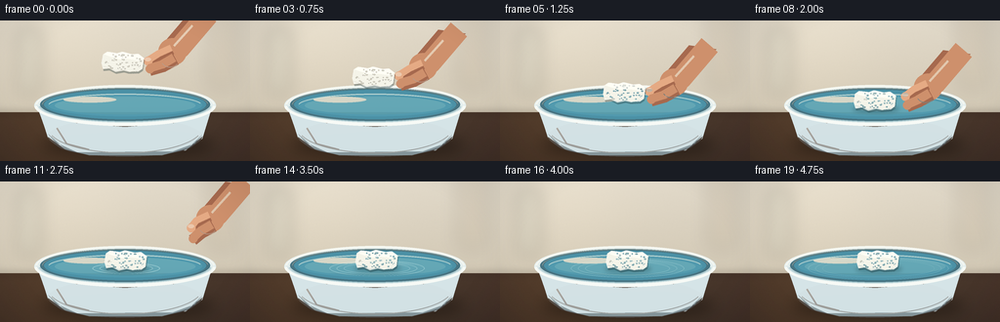
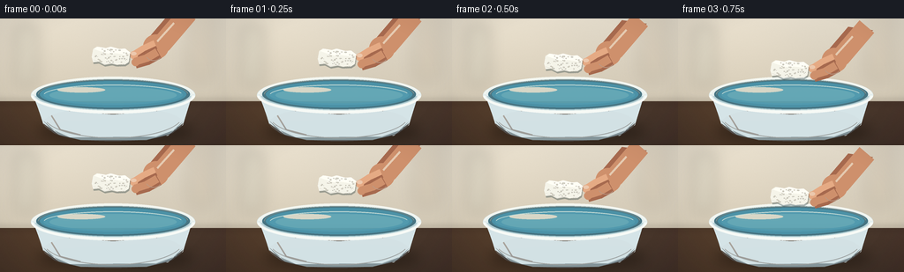

CODING AGENTS AS PIXEL WORLD MODELS
traex/GPT-5.6-Sol · mechanics_0014
点击播放 · 原生 RGB 像素
逐轮保存的候选
回放视频、检查图与代码变化。
每份候选均可单独播放。实际图片检查记录在下方工具轨迹中。
候选 01播放与检查图
点击播放 · 原生 RGB 像素


展开代码变化
--- 上一保存版本
+++ 本次保存版本
@@ -0,0 +1,243 @@
+from pathlib import Path
+import math
+import numpy as np
+from PIL import Image, ImageDraw, ImageFilter
+import artifact_io
+
+W, H, N = 256, 144, 20
+S = 4
+WS, HS = W*S, H*S
+rng = np.random.default_rng(1407)
+
+
+def sc(v): return int(round(v*S))
+def box(b): return tuple(sc(x) for x in b)
+def pts(p): return [(sc(x), sc(y)) for x,y in p]
+
+# Fixed fine film grain, restrained enough to preserve a clean photographic look.
+grain = rng.normal(0, 1.25, (HS, WS, 1)).astype(np.float32)
+
+# Warm kitchen background and dark counter base.
+yy, xx = np.mgrid[0:HS, 0:WS]
+y = yy / S
+x = xx / S
+base = np.zeros((HS, WS, 3), np.float32)
+wall = y < 94
+# softly lit neutral wall
+base[...,0] = 225 - 0.16*y + 8*np.exp(-((x-65)**2+(y-25)**2)/5000)
+base[...,1] = 217 - 0.18*y + 7*np.exp(-((x-65)**2+(y-25)**2)/5000)
+base[...,2] = 201 - 0.22*y + 5*np.exp(-((x-65)**2+(y-25)**2)/5000)
+# walnut counter, with depth gradient
+counter_r = 79 - .22*(y-94) + 6*np.sin(x/48)
+counter_g = 58 - .16*(y-94) + 4*np.sin(x/55)
+counter_b = 43 - .10*(y-94)
+base[...,0] = np.where(wall, base[...,0], counter_r)
+base[...,1] = np.where(wall, base[...,1], counter_g)
+base[...,2] = np.where(wall, base[...,2], counter_b)
+base = np.clip(base + grain, 0, 255).astype(np.uint8)
+background = Image.fromarray(base, 'RGB')
+# Soft out-of-focus vertical objects in the kitchen.
+bokeh = Image.new('RGBA', (WS,HS), (0,0,0,0)); bd = ImageDraw.Draw(bokeh)
+bd.rounded_rectangle(box((17,7,42,77)), radius=sc(8), fill=(173,181,166,38))
+bd.rounded_rectangle(box((211,-8,244,71)), radius=sc(12), fill=(148,123,92,25))
+bd.ellipse(box((27,14,37,25)), fill=(248,243,213,65))
+bokeh = bokeh.filter(ImageFilter.GaussianBlur(sc(8)))
+background = Image.alpha_composite(background.convert('RGBA'), bokeh)
+
+# Counter seam / horizon soft strip.
+horizon = Image.new('RGBA',(WS,HS),(0,0,0,0)); hd=ImageDraw.Draw(horizon)
+hd.rectangle(box((0,91,256,97)), fill=(49,35,27,38))
+horizon = horizon.filter(ImageFilter.GaussianBlur(sc(3)))
+background = Image.alpha_composite(background,horizon)
+
+# Stable styrofoam pore layout in local coordinates.
+pore_rng = np.random.default_rng(551)
+pores = []
+for _ in range(58):
+ px = pore_rng.uniform(-18,18)
+ py = pore_rng.uniform(-8,7)
+ if (abs(px)/20 + abs(py)/14) < 1.18:
+ pores.append((px,py,pore_rng.uniform(.35,1.15),pore_rng.uniform(.35,1.0)))
+
+
+def draw_shadow(im):
+ lay = Image.new('RGBA',(WS,HS),(0,0,0,0)); d=ImageDraw.Draw(lay)
+ d.ellipse(box((43,116,219,140)), fill=(16,11,8,100))
+ lay=lay.filter(ImageFilter.GaussianBlur(sc(7)))
+ return Image.alpha_composite(im,lay)
+
+
+def draw_bowl_back(im, t):
+ # Bowl body first, then back rim and water; front lip is drawn after the floating object.
+ lay=Image.new('RGBA',(WS,HS),(0,0,0,0)); d=ImageDraw.Draw(lay)
+ # porcelain body silhouette and lower shading
+ d.polygon(pts([(37,82),(219,82),(207,121),(190,133),(69,133),(49,120)]), fill=(208,224,228,255))
+ for i in range(20):
+ # nested lower ellipses create softly modeled ceramic shading
+ c=(190-i*2,211-i,218+i//3,55)
+ d.ellipse(box((49+i*.45,100+i*.65,207-i*.45,137+i*.12)), fill=c)
+ # back outer rim
+ d.ellipse(box((35,66,221,108)), fill=(229,239,238,255))
+ d.ellipse(box((41,69,215,103)), fill=(71,116,130,255))
+ # water surface
+ d.ellipse(box((45,71,211,101)), fill=(75,145,166,255))
+ # subtle water depth gradient as nested ellipses
+ d.ellipse(box((49,75,207,98)), fill=(82,154,174,255))
+ d.ellipse(box((56,78,200,96)), fill=(91,164,181,235))
+ # reflected window on water
+ d.ellipse(box((65,78,119,84)), fill=(211,238,235,70))
+ d.arc(box((49,75,207,99)), 188, 348, fill=(183,224,226,165), width=sc(1.0))
+ # back rim highlight
+ d.arc(box((36,66,220,108)), 182, 356, fill=(248,251,246,230), width=sc(2))
+ # interior deep line at rear
+ d.arc(box((43,69,213,103)), 180, 357, fill=(40,89,105,130), width=sc(1))
+ return Image.alpha_composite(im,lay)
+
+
+def ripple_layer(im, frame, cx, cy):
+ # Ripples begin on contact and spread/fade naturally.
+ if frame < 7: return im
+ age=(frame-7)/12
+ lay=Image.new('RGBA',(WS,HS),(0,0,0,0)); d=ImageDraw.Draw(lay)
+ for k in range(3):
+ a=age-k*.13
+ if a <= 0: continue
+ rx=16+56*a
+ ry=3.0+8.5*a
+ alpha=int(max(0,125*(1-a*.62)-k*22))
+ d.ellipse(box((cx-rx,cy-ry,cx+rx,cy+ry)), outline=(210,242,240,alpha), width=sc(max(.55,1.15-a*.45)))
+ # dark underside makes rings legible on water
+ d.arc(box((cx-rx,cy-ry+.8,cx+rx,cy+ry+.8)), 5,175, fill=(25,100,123,alpha//2), width=sc(.7))
+ return Image.alpha_composite(im,lay)
+
+
+def foam_sprite(angle=0):
+ # Large local RGBA tile, irregular broken edges and granular pores.
+ sw,sh=sc(56),sc(38)
+ tile=Image.new('RGBA',(sw,sh),(0,0,0,0)); d=ImageDraw.Draw(tile)
+ ox,oy=28,19
+ poly=[(-21,-7),(-17,-10),(-7,-9),(-2,-11),(8,-9),(14,-10),(21,-6),(20,5),(16,8),(6,9),
+ (1,8),(-7,10),(-14,7),(-20,8),(-22,2)]
+ # soft contact shadow
+ d.polygon(pts([(ox+x+.8,oy+y+2.0) for x,y in poly]), fill=(37,59,61,90))
+ d.polygon(pts([(ox+x,oy+y) for x,y in poly]), fill=(245,244,233,255))
+ # lit top facet and lower granular face
+ top=[(-20,-7),(-16,-10),(-6,-9),(-1,-11),(9,-9),(15,-10),(21,-6),(16,-3),(5,-4),(-4,-3),(-13,-5)]
+ d.polygon(pts([(ox+x,oy+y) for x,y in top]), fill=(255,254,245,255))
+ d.line(pts([(ox-20,oy+5),(ox-13,oy+7),(ox-7,oy+9),(ox+1,oy+7),(ox+7,oy+9),(ox+16,oy+7)]), fill=(202,203,194,130), width=sc(.45))
+ for px,py,r,q in pores:
+ col=(176,181,175,int(70+70*q))
+ d.ellipse(box((ox+px-r,oy+py-r*.72,ox+px+r,oy+py+r*.72)), fill=col)
+ if r>.75:
+ d.ellipse(box((ox+px-r*.45,oy+py-r*.35,ox+px+r*.1,oy+py+r*.08)), fill=(255,255,250,110))
+ if angle:
+ tile=tile.rotate(angle, resample=Image.Resampling.BICUBIC, expand=True)
+ return tile
+
+
+def composite_foam(im, cx, cy, angle, contact=False):
+ spr=foam_sprite(angle)
+ # Waterline shadow immediately under the floating foam.
+ if contact:
+ sh=Image.new('RGBA',(WS,HS),(0,0,0,0)); sd=ImageDraw.Draw(sh)
+ sd.ellipse(box((cx-23,cy+5,cx+24,cy+11)),fill=(19,80,97,90))
+ sh=sh.filter(ImageFilter.GaussianBlur(sc(2.2)))
+ im=Image.alpha_composite(im,sh)
+ im.alpha_composite(spr,(sc(cx)-spr.width//2,sc(cy)-spr.height//2))
+ return im
+
+
+def draw_hand(im, finger_x, finger_y, released, progress):
+ # Hand approaches diagonally from upper-right. Curved broad strokes form palm/fingers.
+ lay=Image.new('RGBA',(WS,HS),(0,0,0,0)); d=ImageDraw.Draw(lay)
+ # Coordinates relative to pinching fingertips.
+ fx,fy=finger_x,finger_y
+ skin=(206,144,108,255); light=(229,170,132,255); shadow=(166,105,78,255)
+ # wrist/palm, oriented toward top right
+ d.polygon(pts([(fx+27,fy-20),(fx+50,fy-47),(fx+78,fy-43),(fx+45,fy-8),(fx+34,fy+1),(fx+19,fy-2)]), fill=shadow)
+ d.line(pts([(fx+71,fy-47),(fx+42,fy-13),(fx+28,fy-8)]), fill=skin, width=sc(22), joint='curve')
+ d.ellipse(box((fx+20,fy-23,fx+49,fy+5)), fill=skin)
+ # index finger aimed at right upper edge of foam
+ sep=5.5*released
+ d.line(pts([(fx+34,fy-11),(fx+21,fy-5),(fx+9+sep,fy+2)]), fill=shadow, width=sc(10), joint='curve')
+ d.line(pts([(fx+33,fy-13),(fx+20,fy-7),(fx+9+sep,fy)]), fill=light, width=sc(7), joint='curve')
+ d.ellipse(box((fx+5+sep,fy-4,fx+14+sep,fy+5)), fill=light)
+ # lower thumb meets edge from the side, opens after release
+ d.line(pts([(fx+38,fy-1),(fx+25,fy+6),(fx+11+sep,fy+10+sep*.55)]), fill=shadow, width=sc(12), joint='curve')
+ d.line(pts([(fx+36,fy-3),(fx+24,fy+4),(fx+11+sep,fy+8+sep*.55)]), fill=skin, width=sc(9), joint='curve')
+ d.ellipse(box((fx+7+sep,fy+4+sep*.55,fx+16+sep,fy+13+sep*.55)), fill=skin)
+ # small nail on index fingertip
+ d.ellipse(box((fx+6+sep,fy-3.3,fx+12.5+sep,fy+.8)), fill=(243,196,165,180))
+ # warm directional highlights and a palm crease
+ d.line(pts([(fx+55,fy-36),(fx+36,fy-15)]),fill=(241,187,149,100),width=sc(2.2))
+ d.arc(box((fx+22,fy-12,fx+42,fy+7)),40,145,fill=(141,84,65,110),width=sc(.8))
+ # slight soft shadow gives separation from the scene
+ shadowlay=lay.copy().filter(ImageFilter.GaussianBlur(sc(1.2)))
+ # tint shadow copy is already skin; low opacity through alpha adjustment avoided to retain crispness
+ return Image.alpha_composite(im,lay)
+
+
+def draw_bowl_front(im):
+ lay=Image.new('RGBA',(WS,HS),(0,0,0,0)); d=ImageDraw.Draw(lay)
+ # Front porcelain wall masks the far half of the water and establishes depth.
+ front=[(37,86),(42,99),(49,119),(67,132),(91,138),(166,138),(192,131),(208,118),(217,87),
+ (211,94),(198,100),(178,105),(128,109),(78,105),(55,99)]
+ d.polygon(pts(front),fill=(213,228,231,250))
+ # cool lower shade
+ d.polygon(pts([(49,116),(67,132),(91,138),(166,138),(192,131),(207,117),(199,126),(177,134),(79,135),(57,125)]),fill=(172,201,210,150))
+ # bright front rim
+ d.arc(box((35,66,221,108)), 2,178, fill=(247,250,246,255), width=sc(3.2))
+ d.arc(box((40,70,216,104)), 3,177, fill=(139,181,190,170), width=sc(1.2))
+ # ceramic highlight
+ d.arc(box((49,84,207,136)), 18,162, fill=(236,246,245,130), width=sc(1))
+ d.line(pts([(58,110),(68,126),(91,132)]),fill=(255,255,250,115),width=sc(1.4))
+ return Image.alpha_composite(im,lay)
+
+
+def make_frame(i):
+ im=background.copy()
+ im=draw_shadow(im)
+ im=draw_bowl_back(im,i)
+
+ # Motion timing: lower for 2 s, contact, release, then settle and drift.
+ if i <= 7:
+ u=i/7
+ ease=u*u*(3-2*u)
+ cx=126.0 + 2.0*ease
+ cy=43.0 + 39.0*ease
+ angle=-4+2*ease
+ contact=(i==7)
+ # contact ripple is behind object
+ im=ripple_layer(im,i,cx,88)
+ # arm follows the piece while pinching its right edge
+ im=draw_hand(im,cx+16,cy-2,0.0,ease)
+ im=composite_foam(im,cx,cy,angle,contact)
+ else:
+ age=i-7
+ cx=128 + min(4.0, age*.28)
+ cy=81.4 + 1.4*math.exp(-age/5)*math.sin(age*1.65)
+ angle=-2 + .9*math.exp(-age/6)*math.sin(age*1.2)
+ im=ripple_layer(im,i,cx,89)
+ # During release the fingers open, then hand retreats up and right.
+ if i <= 13:
+ q=(i-7)/6
+ ease=q*q*(3-2*q)
+ hx=(cx+16)+48*ease
+ hy=(cy-2)-44*ease
+ im=draw_hand(im,hx,hy,min(1,q*1.7),1)
+ im=composite_foam(im,cx,cy,angle,True)
+
+ im=draw_bowl_front(im)
+
+ # A restrained cinematic vignette focuses attention on contact with water.
+ arr=np.asarray(im.convert('RGB')).astype(np.float32)
+ yh,xh=np.mgrid[0:HS,0:WS]
+ dx=(xh-WS*.5)/(WS*.72); dy=(yh-HS*.50)/(HS*.88)
+ vig=np.clip(1-0.15*np.maximum(0,dx*dx+dy*dy-.35),.82,1)[...,None]
+ arr=np.clip(arr*vig,0,255).astype(np.uint8)
+ # Supersample down for smooth curves and RGB compliance.
+ return np.asarray(Image.fromarray(arr,'RGB').resize((W,H),Image.Resampling.LANCZOS),dtype=np.uint8)
+
+frames=np.stack([make_frame(i) for i in range(N)],axis=0)
+artifact_io.save(frames, Path(__file__).resolve().parent)
+print('saved',frames.shape,frames.dtype)
可观测工具轨迹
实际执行的命令与返回图片。
命令 1exit 0
/bin/bash -lc "cat prompt.txt && printf '\\n---RULES---\\n' && cat GENERATION_RULES.md && printf '\\n---SPEC---\\n' && cat task_spec.json"
命令 2exit 0
/bin/bash -lc "find . -maxdepth 2 -type f -printf '%p\\n' | sort"
命令 3exit 0
/bin/bash -lc 'cat artifact_io.py'
命令 4exit 0
/bin/bash -lc "cat > generate.py <<'PY'
from pathlib import Path
import math
import numpy as np
from PIL import Image, ImageDraw, ImageFilter
import artifact_io
W, H, N = 256, 144, 20
S = 4
WS, HS = W*S, H*S
rng = np.random.default_rng(1407)
def sc(v): return int(round(v*S))
def box(b): return tuple(sc(x) for x in b)
def pts(p): return [(sc(x), sc(y)) for x,y in p]
# Fixed fine film grain, restrained enough to preserve a clean photographic look.
grain = rng.normal(0, 1.25, (HS, WS, 1)).astype(np.float32)
# Warm kitchen background and dark counter base.
yy, xx = np.mgrid[0:HS, 0:WS]
y = yy / S
x = xx / S
base = np.zeros((HS, WS, 3), np.float32)
wall = y < 94
# softly lit neutral wall
base[...,0] = 225 - 0.16*y + 8*np.exp(-((x-65)**2+(y-25)**2)/5000)
base[...,1] = 217 - 0.18*y + 7*np.exp(-((x-65)**2+(y-25)**2)/5000)
base[...,2] = 201 - 0.22*y + 5*np.exp(-((x-65)**2+(y-25)**2)/5000)
# walnut counter, with depth gradient
counter_r = 79 - .22*(y-94) + 6*np.sin(x/48)
counter_g = 58 - .16*(y-94) + 4*np.sin(x/55)
counter_b = 43 - .10*(y-94)
base[...,0] = np.where(wall, base[...,0], counter_r)
base[...,1] = np.where(wall, base[...,1], counter_g)
base[...,2] = np.where(wall, base[...,2], counter_b)
base = np.clip(base + grain, 0, 255).astype(np.uint8)
background = Image.fromarray(base, 'RGB')
# Soft out-of-focus vertical objects in the kitchen.
bokeh = Image.new('RGBA', (WS,HS), (0,0,0,0)); bd = ImageDraw.Draw(bokeh)
bd.rounded_rectangle(box((17,7,42,77)), radius=sc(8), fill=(173,181,166,38))
bd.rounded_rectangle(box((211,-8,244,71)), radius=sc(12), fill=(148,123,92,25))
bd.ellipse(box((27,14,37,25)), fill=(248,243,213,65))
bokeh = bokeh.filter(ImageFilter.GaussianBlur(sc(8)))
background = Image.alpha_composite(background.convert('RGBA'), bokeh)
# Counter seam / horizon soft strip.
horizon = Image.new('RGBA',(WS,HS),(0,0,0,0)); hd=ImageDraw.Draw(horizon)
hd.rectangle(box((0,91,256,97)), fill=(49,35,27,38))
horizon = horizon.filter(ImageFilter.GaussianBlur(sc(3)))
background = Image.alpha_composite(background,horizon)
# Stable styrofoam pore layout in local coordinates.
pore_rng = np.random.default_rng(551)
pores = []
for _ in range(58):
px = pore_rng.uniform(-18,18)
py = pore_rng.uniform(-8,7)
if (abs(px)/20 + abs(py)/14) < 1.18:
pores.append((px,py,pore_rng.uniform(.35,1.15),pore_rng.uniform(.35,1.0)))
def draw_shadow(im):
lay = Image.new('RGBA',(WS,HS),(0,0,0,0)); d=ImageDraw.Draw(lay)
d.ellipse(box((43,116,219,140)), fill=(16,11,8,100))
lay=lay.filter(ImageFilter.GaussianBlur(sc(7)))
return Image.alpha_composite(im,lay)
def draw_bowl_back(im, t):
# Bowl body first, then back rim and water; front lip is drawn after the floating object.
lay=Image.new('RGBA',(WS,HS),(0,0,0,0)); d=ImageDraw.Draw(lay)
# porcelain body silhouette and lower shading
d.polygon(pts([(37,82),(219,82),(207,121),(190,133),(69,133),(49,120)]), fill=(208,224,228,255))
for i in range(20):
# nested lower ellipses create softly modeled ceramic shading
c=(190-i*2,211-i,218+i//3,55)
d.ellipse(box((49+i*.45,100+i*.65,207-i*.45,137+i*.12)), fill=c)
# back outer rim
d.ellipse(box((35,66,221,108)), fill=(229,239,238,255))
d.ellipse(box((41,69,215,103)), fill=(71,116,130,255))
# water surface
d.ellipse(box((45,71,211,101)), fill=(75,145,166,255))
# subtle water depth gradient as nested ellipses
d.ellipse(box((49,75,207,98)), fill=(82,154,174,255))
d.ellipse(box((56,78,200,96)), fill=(91,164,181,235))
# reflected window on water
d.ellipse(box((65,78,119,84)), fill=(211,238,235,70))
d.arc(box((49,75,207,99)), 188, 348, fill=(183,224,226,165), width=sc(1.0))
# back rim highlight
d.arc(box((36,66,220,108)), 182, 356, fill=(248,251,246,230), width=sc(2))
# interior deep line at rear
d.arc(box((43,69,213,103)), 180, 357, fill=(40,89,105,130), width=sc(1))
return Image.alpha_composite(im,lay)
def ripple_layer(im, frame, cx, cy):
# Ripples begin on contact and spread/fade naturally.
if frame < 7: return im
age=(frame-7)/12
lay=Image.new('RGBA',(WS,HS),(0,0,0,0)); d=ImageDraw.Draw(lay)
for k in range(3):
a=age-k*.13
if a <= 0: continue
rx=16+56*a
ry=3.0+8.5*a
alpha=int(max(0,125*(1-a*.62)-k*22))
d.ellipse(box((cx-rx,cy-ry,cx+rx,cy+ry)), outline=(210,242,240,alpha), width=sc(max(.55,1.15-a*.45)))
# dark underside makes rings legible on water
d.arc(box((cx-rx,cy-ry+.8,cx+rx,cy+ry+.8)), 5,175, fill=(25,100,123,alpha//2), width=sc(.7))
return Image.alpha_composite(im,lay)
def foam_sprite(angle=0):
# Large local RGBA tile, irregular broken edges and granular pores.
sw,sh=sc(56),sc(38)
tile=Image.new('RGBA',(sw,sh),(0,0,0,0)); d=ImageDraw.Draw(tile)
ox,oy=28,19
poly=[(-21,-7),(-17,-10),(-7,-9),(-2,-11),(8,-9),(14,-10),(21,-6),(20,5),(16,8),(6,9),
(1,8),(-7,10),(-14,7),(-20,8),(-22,2)]
# soft contact shadow
d.polygon(pts([(ox+x+.8,oy+y+2.0) for x,y in poly]), fill=(37,59,61,90))
d.polygon(pts([(ox+x,oy+y) for x,y in poly]), fill=(245,244,233,255))
# lit top facet and lower granular face
top=[(-20,-7),(-16,-10),(-6,-9),(-1,-11),(9,-9),(15,-10),(21,-6),(16,-3),(5,-4),(-4,-3),(-13,-5)]
d.polygon(pts([(ox+x,oy+y) for x,y in top]), fill=(255,254,245,255))
d.line(pts([(ox-20,oy+5),(ox-13,oy+7),(ox-7,oy+9),(ox+1,oy+7),(ox+7,oy+9),(ox+16,oy+7)]), fill=(202,203,194,130), width=sc(.45))
for px,py,r,q in pores:
col=(176,181,175,int(70+70*q))
d.ellipse(box((ox+px-r,oy+py-r*.72,ox+px+r,oy+py+r*.72)), fill=col)
if r>.75:
d.ellipse(box((ox+px-r*.45,oy+py-r*.35,ox+px+r*.1,oy+py+r*.08)), fill=(255,255,250,110))
if angle:
tile=tile.rotate(angle, resample=Image.Resampling.BICUBIC, expand=True)
return tile
def composite_foam(im, cx, cy, angle, contact=False):
spr=foam_sprite(angle)
# Waterline shadow immediately under the floating foam.
if contact:
sh=Image.new('RGBA',(WS,HS),(0,0,0,0)); sd=ImageDraw.Draw(sh)
sd.ellipse(box((cx-23,cy+5,cx+24,cy+11)),fill=(19,80,97,90))
sh=sh.filter(ImageFilter.GaussianBlur(sc(2.2)))
im=Image.alpha_composite(im,sh)
im.alpha_composite(spr,(sc(cx)-spr.width//2,sc(cy)-spr.height//2))
return im
def draw_hand(im, finger_x, finger_y, released, progress):
# Hand approaches diagonally from upper-right. Curved broad strokes form palm/fingers.
lay=Image.new('RGBA',(WS,HS),(0,0,0,0)); d=ImageDraw.Draw(lay)
# Coordinates relative to pinching fingertips.
fx,fy=finger_x,finger_y
skin=(206,144,108,255); light=(229,170,132,255); shadow=(166,105,78,255)
# wrist/palm, oriented toward top right
d.polygon(pts([(fx+27,fy-20),(fx+50,fy-47),(fx+78,fy-43),(fx+45,fy-8),(fx+34,fy+1),(fx+19,fy-2)]), fill=shadow)
d.line(pts([(fx+71,fy-47),(fx+42,fy-13),(fx+28,fy-8)]), fill=skin, width=sc(22), joint='curve')
d.ellipse(box((fx+20,fy-23,fx+49,fy+5)), fill=skin)
# index finger aimed at right upper edge of foam
sep=5.5*released
d.line(pts([(fx+34,fy-11),(fx+21,fy-5),(fx+9+sep,fy+2)]), fill=shadow, width=sc(10), joint='curve')
d.line(pts([(fx+33,fy-13),(fx+20,fy-7),(fx+9+sep,fy)]), fill=light, width=sc(7), joint='curve')
d.ellipse(box((fx+5+sep,fy-4,fx+14+sep,fy+5)), fill=light)
# lower thumb meets edge from the side, opens after release
d.line(pts([(fx+38,fy-1),(fx+25,fy+6),(fx+11+sep,fy+10+sep*.55)]), fill=shadow, width=sc(12), joint='curve')
d.line(pts([(fx+36,fy-3),(fx+24,fy+4),(fx+11+sep,fy+8+sep*.55)]), fill=skin, width=sc(9), joint='curve')
d.ellipse(box((fx+7+sep,fy+4+sep*.55,fx+16+sep,fy+13+sep*.55)), fill=skin)
# small nail on index fingertip
d.ellipse(box((fx+6+sep,fy-3.3,fx+12.5+sep,fy+.8)), fill=(243,196,165,180))
# warm directional highlights and a palm crease
d.line(pts([(fx+55,fy-36),(fx+36,fy-15)]),fill=(241,187,149,100),width=sc(2.2))
d.arc(box((fx+22,fy-12,fx+42,fy+7)),40,145,fill=(141,84,65,110),width=sc(.8))
# slight soft shadow gives separation from the scene
shadowlay=lay.copy().filter(ImageFilter.GaussianBlur(sc(1.2)))
# tint shadow copy is already skin; low opacity through alpha adjustment avoided to retain crispness
return Image.alpha_composite(im,lay)
def draw_bowl_front(im):
lay=Image.new('RGBA',(WS,HS),(0,0,0,0)); d=ImageDraw.Draw(lay)
# Front porcelain wall masks the far half of the water and establishes depth.
front=[(37,86),(42,99),(49,119),(67,132),(91,138),(166,138),(192,131),(208,118),(217,87),
(211,94),(198,100),(178,105),(128,109),(78,105),(55,99)]
d.polygon(pts(front),fill=(213,228,231,250))
# cool lower shade
d.polygon(pts([(49,116),(67,132),(91,138),(166,138),(192,131),(207,117),(199,126),(177,134),(79,135),(57,125)]),fill=(172,201,210,150))
# bright front rim
d.arc(box((35,66,221,108)), 2,178, fill=(247,250,246,255), width=sc(3.2))
d.arc(box((40,70,216,104)), 3,177, fill=(139,181,190,170), width=sc(1.2))
# ceramic highlight
d.arc(box((49,84,207,136)), 18,162, fill=(236,246,245,130), width=sc(1))
d.line(pts([(58,110),(68,126),(91,132)]),fill=(255,255,250,115),width=sc(1.4))
return Image.alpha_composite(im,lay)
def make_frame(i):
im=background.copy()
im=draw_shadow(im)
im=draw_bowl_back(im,i)
# Motion timing: lower for 2 s, contact, release, then settle and drift.
if i <= 7:
u=i/7
ease=u*u*(3-2*u)
cx=126.0 + 2.0*ease
cy=43.0 + 39.0*ease
angle=-4+2*ease
contact=(i==7)
# contact ripple is behind object
im=ripple_layer(im,i,cx,88)
# arm follows the piece while pinching its right edge
im=draw_hand(im,cx+16,cy-2,0.0,ease)
im=composite_foam(im,cx,cy,angle,contact)
else:
age=i-7
cx=128 + min(4.0, age*.28)
cy=81.4 + 1.4*math.exp(-age/5)*math.sin(age*1.65)
angle=-2 + .9*math.exp(-age/6)*math.sin(age*1.2)
im=ripple_layer(im,i,cx,89)
# During release the fingers open, then hand retreats up and right.
if i <= 13:
q=(i-7)/6
ease=q*q*(3-2*q)
hx=(cx+16)+48*ease
hy=(cy-2)-44*ease
im=draw_hand(im,hx,hy,min(1,q*1.7),1)
im=composite_foam(im,cx,cy,angle,True)
im=draw_bowl_front(im)
# A restrained cinematic vignette focuses attention on contact with water.
arr=np.asarray(im.convert('RGB')).astype(np.float32)
yh,xh=np.mgrid[0:HS,0:WS]
dx=(xh-WS*.5)/(WS*.72); dy=(yh-HS*.50)/(HS*.88)
vig=np.clip(1-0.15*np.maximum(0,dx*dx+dy*dy-.35),.82,1)[...,None]
arr=np.clip(arr*vig,0,255).astype(np.uint8)
# Supersample down for smooth curves and RGB compliance.
return np.asarray(Image.fromarray(arr,'RGB').resize((W,H),Image.Resampling.LANCZOS),dtype=np.uint8)
frames=np.stack([make_frame(i) for i in range(N)],axis=0)
artifact_io.save(frames, Path(__file__).resolve().parent)
print('saved',frames.shape,frames.dtype)
PY
python generate.py
ls -lh pixels.npz inspection.png index.html frames/00.png frames/19.png"命令 5exit 0
/bin/bash -lc "python - <<'PY'
import numpy as np
from PIL import Image
from pathlib import Path
p=np.load('pixels.npz')['pixels']
assert p.shape==(144,256,20)
files=list(Path('frames').glob('*.png'))
assert len(files)==20
ims=[np.asarray(Image.open(x).convert('RGB')) for x in sorted(files)]
print('frames',len(files),'shape',ims[0].shape,'modes',set(Image.open(x).mode for x in files))
print('adjacent mean abs deltas:',[round(float(np.abs(ims[i].astype(int)-ims[i-1].astype(int)).mean()),2) for i in range(1,20)])
print('unique first/last',len(np.unique(ims[0].reshape(-1,3),axis=0)),len(np.unique(ims[-1].reshape(-1,3),axis=0)))
PY
command -v chafa || true"保存候选 1 份；完成命令 5 次；可验证图片返回 0 张。原始 API 响应与完整日志保留在本地。